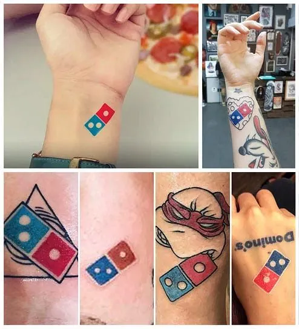

Why Domino's tattoo giveaway went viral
Originally posted on LinkedIn, April 21, 2025.
One morning in 2018, Domino’s Pizza did something unexpected. It offered free pizza for life, defined as 100 pizzas a year for 100 years, to anyone who got its logo tattooed on their body.
The company expected maybe 3 or 4 people to do it. In just 5 days, more than 350 people got Domino’s tattoos. The campaign became so overwhelming that Domino’s had to stop it early.
This is free with a twist. You get something completely free, but only if you do something ridiculous, and slightly crazy, to earn it.
Most marketers think “free” is powerful. The truth is that free is forgettable. What works is making people earn something through an unusual, challenging, or funny experience. The stranger the challenge, the more likely it is to go viral.
Here are 15 more challenges where getting something free became a viral story:
- Krispy Kreme gave away free doughnuts to people who talked like pirates.
- HBO gave away Game of Thrones merchandise to people who donated blood.
- Amazon gave away Echo Dot smart speakers to people who developed an Alexa Skill.
- OnePlus sold phones for $1 to people who broke their old phones and documented it.
- Domino’s gave away free pizza for life to people who got its logo tattooed.
- Google gave away a Home Mini to people who played a silly game in its store.
- The Broadway musical “My First Time” gave away tickets to people who proved they were virgins with a human lie-detector test.
- Vitaminwater offered $100,000 to anyone who gave up their smartphone for a year.
- Canva gave free access to advanced features to people who entered a design competition.
- T-Mobile paid customers’ cancellation fees if they wrote a breakup letter to their previous mobile carrier.
- Taco Bell gave away free tacos when a player stole a base during Major League Baseball’s World Series.
- Inventr offered huge discounts to people who found a secret password in a Facebook group.
- Burger King gave Whoppers to its TikTok followers if BK followed them back.
- Meow Mix gave away cat food to people who listened to its jingle for 12 hours.
- Lyft gave free rides to people who deleted the Uber app.
It is funny, and it works because people value what they worked for far more than what they received easily. This is a known psychological phenomenon called the IKEA effect. When you build something yourself, you become attached to it because you invested effort in it.
There is another payoff:
- The media covers it.
- People share the experience.
- The marketing budget barely moves while attention goes through the roof.
Source: Tom’s Marketing Ideas newsletter.
